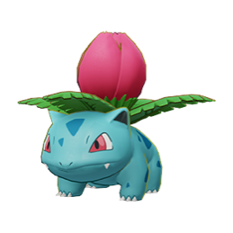
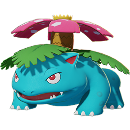
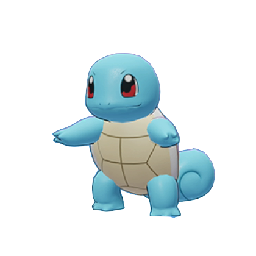

-
Bulbasaur
#001

Descrição
Há uma semente de planta nas costas desde o dia em que este Pokémon nasce, a semente cresce lentamente, enquanto é jovem, usa os nutrientes que estão armazenados na semente nas costas para crescer.
-
Ivysaur
#002
Descrição
Quando o bulbo nas costas cresce, parece perder a capacidade de ficar em pé nas patas traseiras, a exposição à luz solar aumenta sua força. A luz do sol também faz o botão nas costas crescer.
-
Venusaur
#003
Descrição
Sua planta floresce quando está absorvendo energia solar, permanece em movimento para buscar a luz do sol. Um aroma encantador emana de sua flor, a fragrância acalma os envolvidos em uma batalha.
-
Charmander
#004

Descrição
Desde o nascimento, uma chama queima na ponta de sua cauda, tem preferência por coisas quentes. Quando chove, diz-se que o vapor jorra da ponta de sua cauda. Sua vida terminaria se a chama se apagasse.
-
Charmeleon
#005

Descrição
Tem uma natureza bárbara. Na batalha, ele chicoteia sua cauda de fogo e corta com garras afiadas. Se ficar agitado durante a batalha, ele solta chamas intensas, incinerando seus arredores.
-
Charizard
#006

Descrição
Suas asas podem transportar este Pokémon a uma altitude de 4.600 pés, ele cospe fogo que é quente o suficiente para derreter pedregulhos. Pode causar incêndios florestais soprando chamas.
-
Squirtle
#007
Descrição
Quando se sente ameaçado retrai seu longo pescoço em sua concha, puxa seus membros para dentro e esguicha água com força vigorosa.
-
Wartortle
#008
Descrição
É reconhecido como um símbolo de longevidade, se a concha tiver algas, esse Wartortle é muito antigo. Ele controla habilmente suas orelhas e cauda peludas para manter o equilíbrio enquanto nada.
-
Blastoise
#009

Descrição
Ele esmaga seu inimigo sob seu corpo pesado para causar desmaios. Os canhões de foguete em seu casco disparam jatos de água capazes de perfurar o aço grosso.
-
Pikachu
#025

Descrição
Pikachu é um rato eletrico que pode gerar eletricidade poderosa de suas bolsas nas bochechas que são extra macias e super elásticas.
-
Mewtwo
#150

Descrição
Seu DNA é quase o mesmo que o de Mew. No entanto, seu tamanho e disposição são muito diferentes.

Pokédex